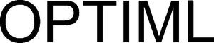

Trade Mark Journal No.2025/015 11 April 2025
WO0000001844677 (9,36,42)
Office of origin: Switzerland
Date of International Registration:11 December 2024
Date of designation in the UK:
11 December 2024

- Class 9
- Application software; application software for mobile telephones; computer software for database management; free software (freeware); interactive computer software; software for information retrieval and consultation on a computer network; computer programs for environmental monitoring; computer programs for environmental control; computer program applications, online publications (for download) relating to sustainable development, sustainability, the environment and environmental protection issues; computer software, hardware and programs for measuring and analyzing carbon dioxide emissions, social impact, pollution and the environment; computer software; computer programs; computer software used as educational tools for education and teaching and in the form of computer programs for use in the field of sustainable development, social impact, the environment and environmental environment; all of the aforesaid in relation to sustainable development, social impact, the environment and environmental issues.
- Class 36
- Asset management; real property management; real property appraisal; management of financial investments in the form of real property; operations of investment of funds in real property; financial advice with respect to investments in infrastructure; providing information in the field of finance and investments; financial planning and advice with respect to investments; advice with respect to investments concerning real property; financial investment brokerage; investments in real property; asset and portfolio management; real property portfolio management; risk analysis, appraisals and forecasts for the financial and investment market; business banking operations.
- Class 42
- Software as a Service (SaaS); computer programs as a service for architectural planning; consultancy in connection with technology; Software as a Service (SaaS) with computer software platforms for artificial intelligence for use in urban planning; design and development of software for technical project planning; research in the field of computerized automation of technical processes; computer Platform as a Service [PaaS]; environmental impact studies; environmental monitoring; conducting environmental audits; technical advice in the field of environmental science; scientific research in the field of environmental protection; research in the field of reducing carbon emissions; technical project studies for CO2 emission offsetting; providing scientific information and advice on CO2 emission offsetting; research in the field of artificial intelligence; analysis of the social impact of the carbon footprint; technological advice in the fields of environmental science, sustainability, sustainable development, social impact measurement and carbon footprint measurement.
OPTIML AG
Representative: ADROIT Rechtsanwälte, Kalchbühlstrasse 4, CH-8038 Zürich, SWITZERLAND